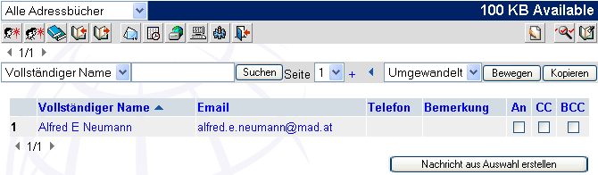
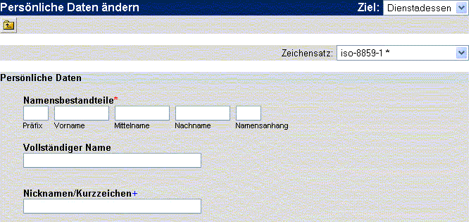

| Das Adressbuch ist eine kleine Datenbank zum Verwalten
Ihrer E-Mailkontakte. Das Adressbuch hat zwei Zugriffsmöglichkeiten.
Den Bearbeitungsmodus, welcher verwendet wird, um Einträge einzufügen,
zu löschen und erweiterte Möglichkeiten zu nutzen. Und den
Verwendungsmodus, um die E-Mailadresse zur Adressierung zu verwenden,
und andere Informationen z.B. in den Betreff in die ausgehende Mail
einzufügen. Zu Beginn müssen Sie neue Einträge in das Adressbuch einfügen.
Sie müssen das Adressbuch im Bearbeitungsmodus öffnen. Dafür klicken
Sie auf den Adressbuchbutton (
 ) in der Haupttoolbar. Dies öffnet umgehend das Adressbuch: ) in der Haupttoolbar. Dies öffnet umgehend das Adressbuch:

Um einen neuen Kontakt anzulegen, klicken Sie auf  . Sie erhalten dann folgende Tabelle: . Sie erhalten dann folgende Tabelle:

Zu Beginn müssen Sie den Namen und
die Mailadresse eingeben (Achtung: Es können bereits Einträge vom
Administrator eingegeben worden sein). Einfach auf das Namensfeld
klicken, und die Eingabe der Daten kann beginnen. Benutzen Sie den
Tabulator, um von einem Feld zum nächsten zu springen. Sie können auch
eine Anmerkung eingeben, um den Kontakt leichter wieder zu finden.
Haben Sie die Eingabe beendet, klicken Sie Hinzufügen/Bearbeiten, um den Kontakt zu speichern. Danach kann der Kontakt leicht beim Senden einer Nachricht verwendet werden
Haben Sie all Ihre Adressen eingegeben, möchten Sie diese später
vielleicht ändern. Um dies zu tun, klicken Sie auf den Namen des
Eintrages. Es wird sich nun das Formular zum Bearbeiten öffnen. Sie
könenn jetzt die gewünschte Änderung an dem Kontakt durchführen, indem
Sie auf das entsprechende Textfeld klicken und die Änderung eingeben.
Anschließend drücken Sie auf Hinzufügen/Bearbeiten, um die Änderung zu speichern .
Sie können Kontakte einfach löschen, indem Sie bei "Bewegen und
Kopieren" im Auswahlfeld links daneben -- LÖSCHEN -- auswählen, den/die
Kontakt(e) markieren und dann auf "Bewegen" klicken.
Sie können ebenfalls mehrere Einträge zu einer Gruppe
zusammenfassen. Das erlaubt Ihnen eine Sammelnachricht zu mehreren
Kontakten unter einem Namen zu verfassen, ohne die bereits eingegebenen
Daten noch einmal eingeben zu müssen. Um Einträge zusammenzufassen,
klicken Sie auf den Gruppierbutton (  ). Ein Fenster mit allen Adressbucheinträgen wird geöffnen. Wählen Sie
nun die Einträge, die Sie gruppieren wollen, und danach wählen Sie
"Weiter". Wählen Sie nun Hinzufügen/Bearbeiten, schon sind Sie fertig.
). Ein Fenster mit allen Adressbucheinträgen wird geöffnen. Wählen Sie
nun die Einträge, die Sie gruppieren wollen, und danach wählen Sie
"Weiter". Wählen Sie nun Hinzufügen/Bearbeiten, schon sind Sie fertig. |